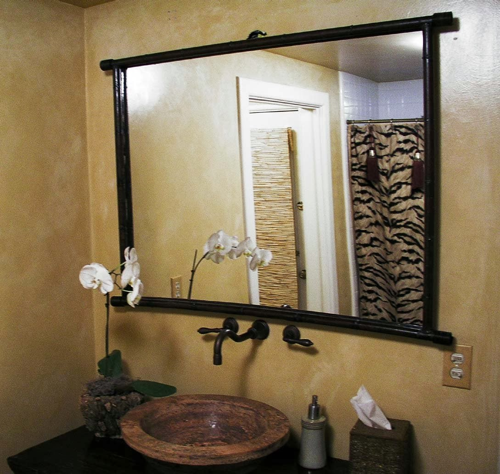

Semakin berkembangnya dunia pembangunan, karenanya hadir banyak material penambah yang melengkapi estetika sebuah banguanan. Kaca semakin melengkapi bangunan supaya terlihat lebih menawan dan mempunyai skor keindahan bila di pandang orang. Berikut sedikit penjelasan yang bisa anda baca mengenai sebagai acuan and ajika akan membangun rumah ataupun daerah usaha.
Tidak kaca tempered, kaca shower, kanopi kaca, parket kayu jati dan masih banyak lagi. Tiap kaca memiliki fungsi masing-masing yang membikin banyak orang semakin mebutuhkannya dari hari ke hari. Berikut ini sedikit review mengenai kaca bagi sebuah banguanan, fungsi utama dan bagaiman memilih kaca yang pantas untuk sebuah hunian baik rumah, kantor ataupun gedung. Akan di jelaskan juga mengenai lantai kayu jati terbaik yang dapat anda beli.
Jasa Maintenance Kaca Dumai
Maintenance pada kaca benar-benar diperlukan agar gedung pencakar langit milik Anda kelihatan bagus dan bersih. Sudah sebagian tahun, kaca gedung menjadi kusam sebab terik sinar sang surya, debu, hujan, atau kotoran lainnya. Jasa maintenance kaca Dumai juga menawarkan pelayanan pembetulan. Tidak ada kaca yang rusak atau pecah, sanggup untuk melaksanakan perbaikan mampu membersihkan berjenis-jenis macam kaca dengan ukuran, betuk, serta warna yang sesuai dengan yang Anda butuhkan. Umumnya ditahui banyak pemilik gedung kaca yang ingin merawat bangunan. Tidak kaca tidak kusam, maka kaca mesti dibersihkan secara regular. Kalau itu, kapabel membersihkan bangunan kaca melengkung.
Dengan menggunakan bahan pembersih yang akan membikin kaca menonjol bersih seperti pertama kali dipasang.
Disana anda dapat memanfaatkan maintenance kaca Dumai Dumai dengan kekuatan spesialis yang sanggup membersihkan gedung kaca dengan produk pembersih kaca apa yang terbaik untuk menghilangkan kotoran dan kusam. Dis.or.id memiliki seluruh kekuatan ahli yang di rekrut hanya mereka yang profesional yang tahu persis bagaimana cara memakai alat dan bagaimana membersihkan kaca gedung bertingkat. Oleh sebab itu, dis.or.id cuma memilih orang-orang yang amat profesional dan telah mempunyai pengalaman dalam hal maintenance kaca Dumai . Selain hanya dalam hal membersihkan kaca, mereka juga sanggup mengerjakan pembetulan serta penggantian kaca yang mengalami kerusakan.
Info Pemesanan Selengkapnya
Google Maps: https://www.google.com/maps/d/u/0/viewer?mid=1p_FromQbeWpcNOhOEjbFkVYqH9Hbcdtt&ll=-7.27380280025364%2C112.65243155000007&z=18
Note: https://www.facebook.com/notes/distributor-of-industrial-supply/kontraktor-jasa-maintenance-kaca-gedung-rusak-pecah-kusam-dlsb/1785712251728654/
Event: https://www.facebook.com/events/1976326045988519/
Portfolio Produk: https://www.facebook.com/1681607345472479/photos/?tab=album&album_id=1712630562370157
Distributor & Supplier Kaca Shower
Anda pastinya meninginkan desain kamar mandi rumah layaknya kamar mandi hotel berbintang yang menggunakan WC duduk serta dilengkapi shower ataupun bath tub. Salah satu metode yang dapat diterapkan untuk menghasilkan kamar mandi yang selalu bersih yaitu menerapkan shower karena cara pembersihannya memang jauh lebih praktis dibanding dengan yang mengaplikasikan konsep bak mandi. Dan sensasi mandi menjadi lebih asik untuk dinikmati. Pengerjaan ini memang desain shower berbahan kaca memang lebih banyak diterapkan daripada desain shower berbahan tirai. Tentunya banyak kelebihan yang bisa di peroleh dari pemakaian kaca shower pada kamar mandi di rumah anda. Kelebihan shower screen dibanding dengan cara penyekatan yang lain ialah diciptakan dalam bentuk yang telah jadi dan tinggal dipasang saja.
Tidak anda sedang membutuhkan kaca shower untuk kamar mandi anda, anda bisa lantas mengunjungi dis.or.id. Tak hanya itu, kaca shower yang di beli di dis.or.id pemasangan lebih gampang dan fleksibel. Tak terbaik dan harga relatif murah. Anda bisa buktikan sendiri.
Distributor, Supplier & Jasa Pasang Kanopi Kaca

Salah satu tipe kanopi kaca yang bisa anda aplikasikan pada atap merupakan atap kaca skylight yang adalah kanopi kaca dalam format jendela horizontal atau kubah yang umumnya ditempatkan di atap bangunan yang mempunyai maksud untuk pencahayaan ruangan. Seiring dengan perkembangan zaman di dunia properti, sekarang kanopi kaca terlah berkembang cepat mengikuti arsitektur modern . Jadi sudah tak heran lagi seluruh orang berharap mencari harga yang sangat kompetitif untuk menyesuaikan budget atau anggaran mereka masing – masing untuk membikin produk canopy kaca. {Jikalau tembus pandang, kaca mengabsorpsi sinar yang masuk sehingga kian tebal kaca karenanya semakin sedikit sinar yang bisa melewatinya, karenanya sifat transparannya makin berkurang.|Di samping pintu kaca shower akan membikin kamar mandi kecil nampak lebih besar. Pada atap akrilik, penyerapan cahaya yang terjadi demikian kecil sehingga sedangkan ketebalannya bertambah, sifat transparannya tidak banyak berubah. Atap akrilik atau bisa juga disebut atap kaca acrylic ini banyak ditemukan di sebuah bangunan rumah, seperti ruko, apartemen, resto, mall, hingga bangunan gedung.
Tidak anda ketika ini sedang membutuhkan kanopi kaca, anda dapat langsung mengunjungi dis.or.id. Disana anda dapat mendapatkan atap kanopi kaca dengan mutu terbaik dan harga terjangkau. Banyak bangunan seperti gedung perkantoran, perumahan, ruko dan apartement yang menggunakan kanopi kaca tempered. Kalau fungsi utama kanopi sebagai pelindung untuk bangunan tersebut, pemasangan kanopi kaca juga bisa membikin bangunan menjadi menonjol lebih menawan dan menarik, apalagi menerapkan konsep yang sama dengan konsep rumah minimalis. Setelah kaca untuk atap kanopi cukup digemari. Tidak anda sedang mencari kanopi kaca, anda bisa segera mengunjungi dis.or.id.
Jasa Pemasangan Kaca Tempered

Tidak yang telah di ketahui bahwa jasa pemasangan kaca tempered hanya dikerjakan oleh orang yang profesional. Kecuali hanya menjalankan pemasangan kaca tempered untuk gedung perkantoran, melainkan juga untuk rumah hunian. Dengan proses pendinginan yang kencang membuat kaca mempunyai kelenturan dan energi yang bagus kepada tekanan di kedua sisi permukaan kaca. Karenanya dari itu, mereka telah mulai menyenangi macam kaca yang satu ini. Kini, kian banyak properti yang menggunakan kaca tempered. Kecuali ini tidak lain karena semakin banyak orang yang memahami kualitas serta keunggulan dari kaca tempered ini.
Tak anda berminat untuk memasang kaca temeperd, anda hanya tinggal mengunjungi web dis.or.id. Bukan sembarang alat yang diaplikasikan untuk memotong kaca tempered sesuai dengan keperluan. Anda dapat langsung mengunjungi dis.or.id untuk menerima informasi mengenai jasa pemasangan kaca tempered, menggunakan kaca tempered dan pastinya hasil yang diberikan malahan akan pantas dengan apa yang Anda inginkan.
Distributor & Supplier Pintu Kaca
Proses ini banyak model pintu seperti sesuai dengan ada di bayangan Anda. Tidak cuma di gedung atau perkantoran, namun pntu kaca juga dapat anda aplikasikan pada rumah agar sinar bisa lantas masuk pada ruangan dan memberikan suasana hangat. Peralatan teladan pintu kaca dapat anda temukan, tak hanya contoh pintu kaca konvensional, adalah pintu kaca lipat, tapi juga pintu kaca geser. Tenaga variasi kaca yang bisa Anda pilih untuk pintu kaca Anda seperti kaca tempered yang sedang booming atau kaca non-tempered yang harganya lebih relatif murah. Sekarang tak kalah penting lagi merupakan pemilihan kaca. Kini paling banyak diminati dikala ini merupakan kaca tempered sebab jauh lebih kuat dan bendung lama.
Dis.or id siap membantu anda untuk membuatkan pintu kaca idaman anda. Kalau ahli yang sungguh-sungguh profesional sehingga betul-betul siap untuk menjadikan pintu kaca seperti apa yang ingin Anda miliki.
Terdapat juga pilihan lain berapa kaca non-tempered yang harganya relatif lebih murah. Dis.or.id memiliki kekuatan yang telah sangat profesional di bidang ini.
Jual Kaca Cermin

Kaca cermin ataupun kaca reflektif yakni macam kaca yang bisa memantulkan sinar dan mereduksi sifat tembus pandang dari sisi luar, sehingga sering pula disebut dengan kaca one way. Kaca cermin dilapisi dengan pelapis transparan tipis dan oksida logam sebagai lapisan pelapis. Sekarang, cermin tak cuma berbentuk persegi saja. Ada sebagian keunggulannya. Cermin dengan berjenis-jenis ukuran juga tersedia. Jadi, cuma menonjol transparan dari satu sisi saja. Tidak saja, memang kesan minimalis tampak dari cermin dengan bentuk persegi atau persegi panjang. Kini perlu diamati juga merupakan apakah Anda mau memiliki kaca cermin desain minimalis atau yang elegan. Artinya, Anda tidak bisa memperhatikan yang ada di dalam ruangan.
Akan namun, ada juga opsi lain berupa kaca cermin yang berbingkai. Pun, Anda dapat gunakan kaca cermin ini sekalian sebagai material utama, seperti sebagai pintu lemari di kamar tidur Anda. Atau Anda dapat memilih cermin yang dibangkai dengan bermacam-macam macam bahan seperti kayu, aluminum, plastik, dan bahan lainnya. Karenanya cuma persegi atau persegi panjang. Anda bisa menambahkan bingkai atau tanpa bingkai layak dengan kesukaan Anda. Cermin ini umumnya ditempatkan di kamar mandi, di atas wastafel, atau di kamar tidur. Harga yang terjangkau dan kwalitas terbaik ialah ciri khas dari dis.or.id. Namun kunjungi dan temukan kabar menarik mengenai kaca cermin asa anda. Tak anda berminat untuk mempunyai kaca cermin bagus sebagai pemanis ruangan atau sebagai pintu, anda bisa seketika mengunjungi dis.or.id.
Jasa Pemasangan Railing Kaca
Railing kaca sekarang kian banyak pilihannya. Anda tidak cuma ditawarkan dengan contoh atau desain railing kaca yang sama. Pun juga bagian pegangan atau piguranya. Pun aksesoris seperti pada pegangan tangga pun tidak terbuat dari bahan kayu lagi tetapi kaca dan aluminum. Sebaiknya pakai kaca tempered karena macam kaca ini betul-betul kuat. Sekiranya itu, dari segi keamanan, kaca tempered ini juga ideal jika menjadi pilihan Anda. Tetapi kaca pecah, kaca tempered tidak akan melukai orang yang terkena kaca tempered hal yang demikian lantaran pecahan semacam itu kecil dan lembut, tak berupa kepingan yang runcing.
Ada banyak pilihan jenis kaca yang bisa diaplikasikan. Tidak ini tidak hanya diatur oleh ketebalan atau harga tapi juga oleh ragam. Jika itu, jika terjadi musibah gempa bumi dan rupanya kaca pecah, kaca tempered ini akan pecah dan menyusun pecahan yang amat kecil dan lembut. Dengan demikian, pecahan tak akan melukai siapapun. Pecahannya sungguh-sungguh kecil dan lembut sehingga tak akan melukai siapa saja yang terkena pecahan. Kini pasti, railing kaca ini menjadi alternatif yang pas. Pastikan juga aluminum ini sangat baik dan kuat.
Distributor & Supplier Pintu Lipat Kaca
Pada kenyataannya, harga kaca tempered ini tidak terlalu mahal. Mak dari itu, kaca ini ditawarkan dengan harga yang cukup dan relatif murah. Sekarang pasti, modelnya banyak sesuai dengan yang Anda butuhkan.
Tidak hanya itu, pintu lipat kaca dapat Anda pasang di kamar lantai atas yang ada balkon. Akan tetapi, ada juga penentu harga lainnya seperti aksesoris.
Jasa Pemasangan Kubikel Toilet
Kubikel kamar kecil memiliki desain yang mewah dan elegan sehingga siapa saja yang melihatnya pasti akan beratensi, tidak hanya itu kubikel kaca memberikan kesan bersih, rapid an tersusun. Kubikel kamar kecil dapat di gunakan di toilet mall.
Anda juga bisa membuat kamar mandi di space yang lebih kecil dan tak memerlukan lahan yang begitu besar untuk membikin toilet yang banyak. Kaca juga dapat menjadi solusi estetika kamar mandi, namun juga dapat jadi persoalan bila Anda mengaplikasikan material dan tempat yang salah. Bila anda berminat untuk mempunyai kubikel kamar kecil, anda bisa seketika mengunjungi dis.or.id.
Jika anda berharap memiliki kubikel toilet ini, anda dapat mengunjungi laman dis.or.id.
Tapi penggunaan kaca di kamar mandi dapat jadi masalah ketika Anda meletakkannya dengan salah. Bila anda dikala ini sedang memerlukan kaca shower untuk kamar mandi, langsung saja kunjungi dis.or.id untuk melakukakn pengorderan ataupun menanyakan detail harga dari kaca shower. Kaca shower yang di jual di jamin kaca shower yang memiliki kualitas terbaik dan berkualitas tinggi.
Distributor & Supplier Partisi Kaca
Partisi kaca tidak lagi dianggap sebagai hal yang aneh lagi. Banyak rumah hunian yang sekatnya sekarang terbuat dari kaca. Selain itu, pengerjaannya juga tidak memakan waktu sehingga Anda dapat menghembat biaya pemasangan. Dalam hal ini, Anda patut tahu ragam kaca apa yang bagus untuk partisi. itu, tentukan juga desainnya apakah partisi kaca hal yang demikian frameless (tanpa pigura) atau dengan bingkai. Kecuali itu, pertimbangkan juga privacy. Ini yang akan membikin Anda menetapkan hal yang ideal apakah Anda kaca transparan, semi transparan, atau kaca cermin. Belum lagi tarif untuk tukang yang dapat lebih banyak daripada pembelian bahan bangunan. Lain kalau Anda memilih menggunakan partisi kaca. Bahan ini lebih murah dan gampang dalam pemasangan. Anda bisa memakai partisi kaca ini sebagai penyekat beberapa ruangan seperti kamar mandi dalam, taman dalam ruangan, ruangan bermain di dalam rumah, dan lain sebagainya. Kecuali, Anda seharusnya observasi kualitas kaca yang dipakai. Dis.or.id bermacam-macam ragam kaca penyekat yang kualitasnya terbaik. Partisi kaca dengan mutu terbaik dan berkualitas dapat anda peroleh di dis.or.id. Disana anda dapat partisi kaca dengan harga yang benar-benar relatif murah.